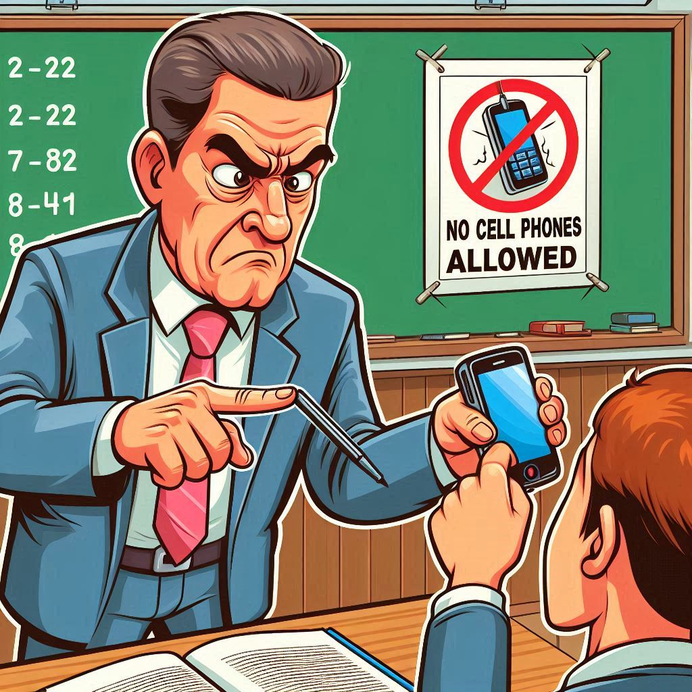
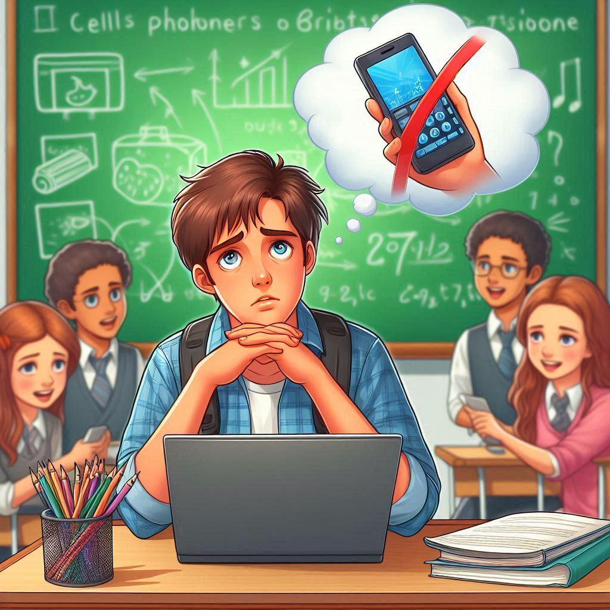
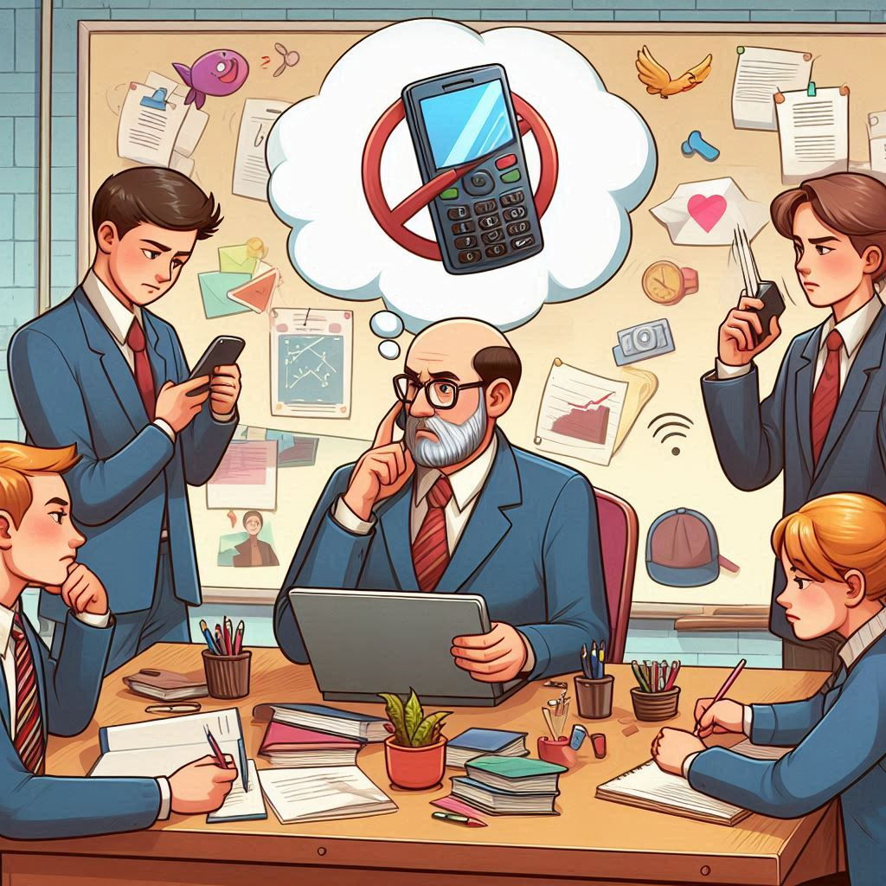

Question Of The Week: Cell Phone Ban

-
On April 28th, the Ontario government banned cell phones in class,
despite the fact that another cell phone ban was already implemented in
2019. This poses the question of why we need a cell phone ban in the
first place, let alone two bans. However before getting into that
question, let's first look at what the ban actually does:
-
It completely bans cell phones for the entire school day for
Grade 6 students and below, unless a teacher allows for it to be used
-
It bans cell phones for Grade 7 students and above
during class time, unless a teacher allows for it to be used
- If a student's cell phone is seen by a teacher it will be:
-
Taken away for the rest of the day if the student in Grade 6
or below
-
Taken away for the rest of class if the student is in Grade 7
or above
-
If a student does not hand over their device, they will have to go
to the principals office
-
This will be done be requiring schools to put a policy in place in
order to enforce these new rules
-
Education Minister Stephen Lecce (shown above) says that this ban will
be more effective then the previous ban in 2019 as it will be more
consistent in enforcing the rules across all of Ontario
-
Now let's answer some of the questions you might have about this ban:
- What is the reasoning behind this ban?

-
The Ontario government has said that there are two main reasons behind
the ban:
- Minimizing distractions for students
-
It makes sense that the government would want to minimize
distractions for students, and it's no secret that cell phones are
a big distraction for students. For example, Rutgers University
found that when students use their phones in class, they perform
worse on exams. They also found that students who didn't use their
phone in class, but were in a class where other students used
their phones, also performed worse on exams. This shows that cell
phones are a distraction for students, even if they aren't the
ones using them.
- Improving student's mental health
-
This is also a valid concern for the government to have. Many
Universities and Colleges have done research that has stated that
cell phones hurt mental health. For example, this is what Colombia
University said about cell phones impact on mental health, "The
constant stream of notifications and updates can create a sense of
urgency and a fear of missing out, leading to increased anxiety
and stress. Furthermore, the excessive use of smartphones can
interfere with sleep, which is crucial for mental health".
- Do I think the ban is needed? Why or why not?

-
I do believe that this ban is needed. As mentioned in the previous
section, there is clear evidence that cell phone use harms students in
a variety of different ways. Additionally, through my own experience
as a student, I have also seen the distractions that phones can be to
students, however, different teacher handle cell phones differently,
some just don't care, and say that it's the students problem if they
don't pay attention, and other teachers actively enforce that students
don't use their cell phones. I believe that by implementing a policy
that makes all teachers enforce cell phone bans, students will be
forced to develop new habits that will end up helping later in life,
as they will no longer have the habit of using their phone all the
time.
- Do I think it will be effective?
-
I think the ban will be effective
as long as teachers actually enforce it. However, that's a big
if, as it doesn't seem like their is any motive for teachers to
actually enforce the ban, which could lead to a slippery slope where
teachers enforce the ban less and less until it's not enforced at all.
But, if teachers do enforce the ban then, like I mentioned earlier,
students will end up developing new habits and won't just be on their
phone all the time.
-
What are the potential benefits and drawbacks of this ban (both
academically and socially)?
- Benefits
-
I won't dwell on it too long, since I have already mentioned it, but
academics and mental health will definitely improve as a result of
the ban, as detailed in the studies that I cited
-
Students may also be more social with each other, as they won't be
able to use their phones to avoid talking to others
- Drawbacks
-
I don't think there are many drawbacks to the plan, it's not like
you're not even allowed to bring cell phones into the building and,
for grades 7 and up, they will still be able to go on their phone
while not in class, so if they ever want to talk to their friends
online they can just do it then. Additionally, the law specifically
allows phones to be used if teachers allow it for educational
purposes, so nothing in terms of academics will be lost.
-
What strategies can schools implement to enforce the ban effectively?
What challenges might they face?
-
Like I mentioned earlier, the strategies that teachers are required to
enforce by the government is that if a teacher sees a phone in class,
the student must give their phone to the teacher for the rest of day
if they are grade 6 and under or for the rest of class if they are
grade 7 and up. Additionally, individual schools or school board may
also implement their own more harsh policies to further discourage
phone usage.
-
There are a couple issues with these strategies. One is that if a
student doesn't give their phone to the teacher, they have to go to
the principals office. This creates a bigger disruption in the class
and causes the student to miss more class time. Another issue is that
teachers will now have to keep eyes on students to make sure they
aren't using their phones, which could distract them from teaching.
Another issue is that this makes teacher responsible for all students
phones, which creates a liability for the teacher if the students
phone gets lost or damaged.
-
Are there alternative approaches could achieve similar (or better)
outcomes without an outright ban?
-
While there is other strategies, I don't think they would be as
effective as a ban. For example, one alternate strategy could be just
be to teach kids to moderate their phone use, however this is very
hard to do as most apps are literally designed to be addictive, as
Sachin Maharaj, who is an assistant professor of education leadership,
policy and program evaluation at the University of Ottawa says in
this article by the CBC, "Part of the reason for this is because social media apps are not
designed to be used in moderation or responsibly. They're designed to
be as addicting as possible [...] It makes it very difficult for
teachers, and especially kids, to compete with that". Another argument
against the ban is that students will no longer be able to communicate
with their parents during the day, however
this article put out by Boston University says
that when parents communicate with their kids during the day via text,
that small distraction can take a students brain's 20 minutes to
refocus on what they were doing in class. Additionally, the United
Nations Educational, Scientific and Cultural Organization flat out
said in
this article
that "Only technology that has a clear role in supporting learning
should be allowed in school".
- What role can/should students play in this process?
-
I think that where students play a role in helping to encourage their
classmates to not use their phones in class, without having to get the
teacher involved. For example, if a student sees another student using
their phone in class, they could just remind the student like "Hey, if
the teacher sees you're phone, you know they're going to take it away,
right?".
- How badly would I personally be affected by this ban?
-
During lessons, I usually am pretty good about not using my phone,
however after the lesson is over or if we have a work period, I will
usually check my phone a couple of times. So I would be somewhat
affected by the ban. However, after learning that it takes 20 minutes
for a student to refocus after being distracted by their phone, I
think that I will try to break that habit, regardless of the ban.
- Are there other/related issues that should be considered?
-
The government is doing more things to prevent smoking/vaping in
schools, which has been such a big issue that it has caused almost
every single student washroom to be closed. The government is putting
$30 million into doing things like installing vape detectors in
schools, which will hopefully help to resolve this issue.
Image Sources:
-
Bing Image Creator - bing.com
-
LILLEY UNLEASHED: Lecce to union - Take strike off the table; negotiate and keep the kids in school - torontosun.com
Information Sources:
-
Cellphones and other mobile devices in schools - ontario.ca
-
Ontario tightens rules on cellphone use, bans vaping in schools - cbc.ca
-
Smartphones, Social Media, and Their Impact on Mental Health - columbiapsychiatry.org
-
Cellphone Distraction in the Classroom Can Lead to Lower Grades, Rutgers Study Finds - rutgers.edu
-
Are cellphone bans in schools a good idea? Experts weigh in - cbc.ca
-
Why Schools Should Ban Cell Phones in the Classroom—and Why Parents Have to Help - bu.edu
-
Smartphones in school? Only when they clearly support learning - unesco.org